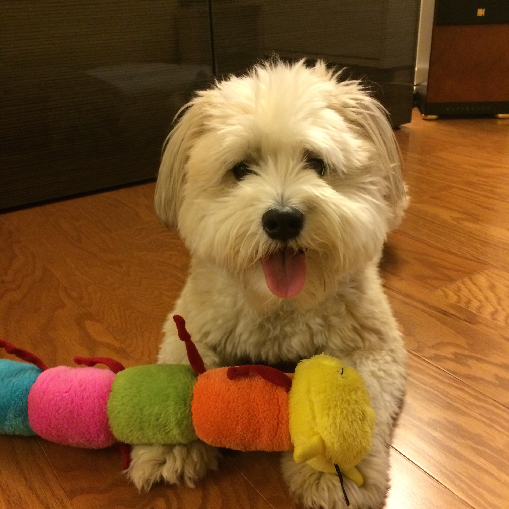

Kristin is a 2nd year MBA student at the Kellogg School of Management. Prior to Kellogg, she was in brand management and marketing roles at Procter & Gamble and American Express after graduating with an A.B. in Government and Sociology from Harvard College. Upon graduation from Kellogg, Kristin plans to move to San Francisco to join Deloitte Consulting LLP as a Senior Consultant in the Strategy & Operations group.
• Evaluated over 200 key partners for business continuity readiness and risk for multinational bank client.
• Worked on Charmin brand, and with FutureWorks, a new business creation team.
• Worked on business experience projects for American Express OPEN